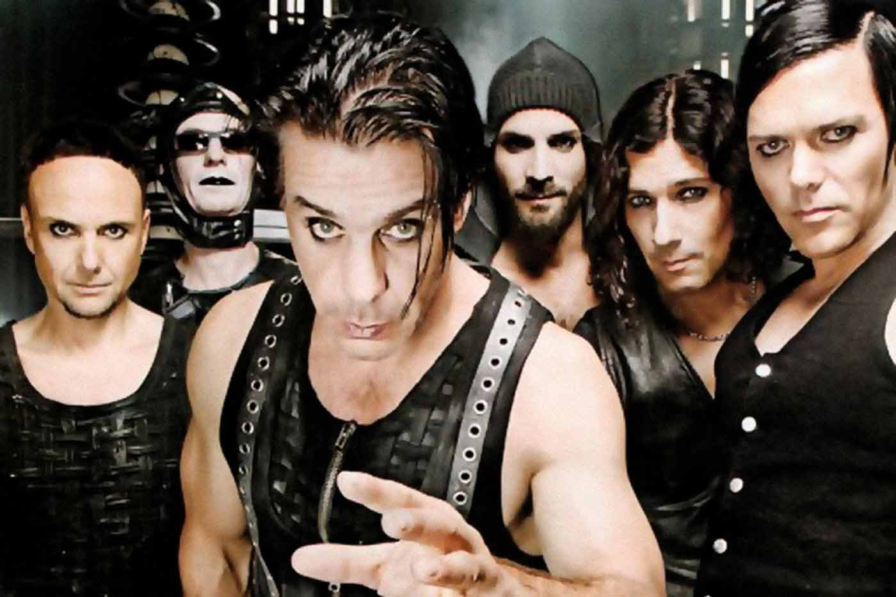
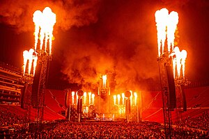

Rammstein fue formado en 1994 por proletarios criados en Alemania del Este. Tomaron su nombre de la ciudad de Ramstein, en cuya base aérea ocurrió un accidente durante un espectáculo, tres aeronaves italianas colisionaron contra el público. Para transformar el nombre añadieron una "m"; de este modo surgió "Rammstein" que literalmente significa Piedra rameante, o catapulta hecha de piedra..